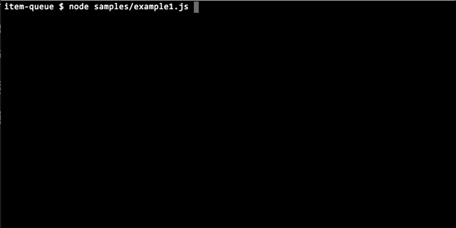

Module item-queue
item-queue


- API reference - TypeDoc
- Markdown reference - the full API and runtime behavior in one file. Also ships in the package.
- GitHub
An item processing queue using Promise.
Features
- incrementally add items
- concurrent processing
- pause and resume processing
- automatic watch timer for long pending items
- per item timeout with an
AbortSignal
Usage
Simple Example:
import { ItemQueue } from "item-queue";
async function test() {
let total = 0;
const queue = new ItemQueue<number>({
// processItem can be an async or sync function
async processItem(delay) {
await new Promise((resolve) => setTimeout(resolve, delay));
total = total + delay;
},
itemQ: [10, 20, 30, 40, 50, 60, 70, 80, 90],
concurrency: 2,
});
const waiting = queue.start().wait();
queue.addItem(75); // add one item while queue in progress
queue.addItems([55, 45, 35]); // can add multiple items also
await waiting;
console.log("result:", total);
}
Timeout
Set timeout to fail any item that takes longer than that many milliseconds.
const queue = new ItemQueue<string>({
timeout: 5000,
async processItem(url, _id, signal) {
const res = await fetch(url, { signal });
return res.text();
},
});
A timed out item fails with an ETIMEDOUT error, and its slot goes to the next item.
A result that arrives after the timeout is ignored.
The queue can't cancel the work, so processItem gets an AbortSignal that is aborted on timeout.
Pass it on or check it to stop the work. The signal is only passed when timeout is set.
Demo
More Examples:
See sample for a demo usage with visual-logger.
